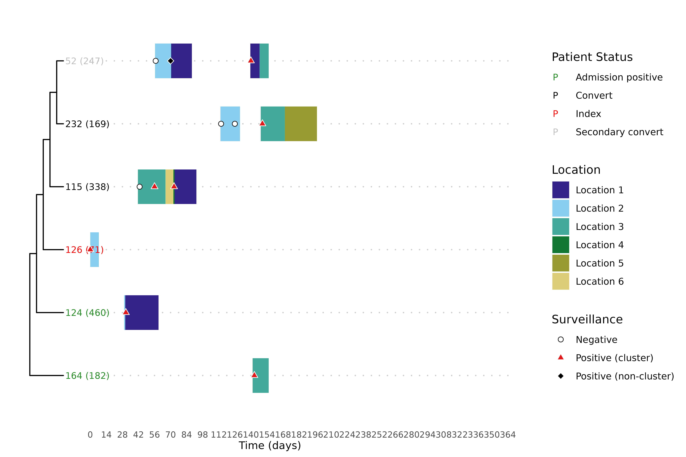

Visualizing transmission with the trace-phylogeny figure
Source:vignettes/articles/trace_phylogeny.Rmd
trace_phylogeny.RmdThe clusters and overlap analyses in the other articles are
summaries: they reduce a transmission story to labels and fractions. To
actually read a cluster — to see who was where, when each
patient first turned positive, and how the genomes relate — it helps to
look at all of that at once. The trace-phylogeny figure, drawn by
hospitraceRVisualize::plot_trace_phylo_tree(), places the
phylogenetic tree of a cluster’s isolates beside each patient’s movement
through the facility, with surveillance cultures overlaid. It is the
headline figure of the toolkit, and this article shows how to build
it.
We reuse the threshold-free clustering from the introductory article, and the per-isolate lookup and patient categorization from the overlap analysis article, since the figure is driven by both.
library(hospitraceR)
library(hospitraceRVisualize)
library(ape)
# An example dataset of isolates and their patient epidemiological metadata.
extdata_dir <- file.path("..", "..", "inst", "extdata")
load(file.path(extdata_dir, "example.RData"))
dna_aln <- read.dna(file.path(extdata_dir, "example.fasta"), format = "fasta")
# Keep isolates whose patients appear in the location traces, then the variable sites
dna_aln <- dna_aln[dna_pt_labels[labels(dna_aln)] %in% rownames(facility_trace), ]
dna_var <- dna_aln[, apply(dna_aln, 2, function(x) sum(x == x[1]) < nrow(dna_aln))]
snp_dist <- get_snp_dist_matrix(dna_var)
tree <- get_phylo_tree(dna_var, snp_dist, "pars")
#> Final p-score 2673 after 20 nni operations
clusters <- get_tn_clusters_sv_index(
dna_var, snp_dist, adm_seqs, adm_pos_pt_seqs, dna_pt_labels, dates, tree
)Preparing the inputs
plot_trace_phylo_tree() needs three things from
hospitraceR: the phylogenetic tree, an isolate
lookup from get_isolate_lookup(), and the patient
categorization from cluster_patient_categorization() (which
colors each tip label by the patient’s inferred role). The remaining
inputs — a patient-by-date trace matrix and the surveillance data frame
— come straight from the dataset. We use floor_trace here
so that different floors show up as different colors.
isolate_lookup <- get_isolate_lookup(
clusters, dna_var, dna_pt_labels, adm_seqs, dates, surv_df
)
patient_cats <- cluster_patient_categorization(isolate_lookup, surv_df)A facility-wide figure with every isolate would be unreadable, so the
figure is drawn one cluster at a time via the
cluster_filter argument. To pick an illustrative cluster,
we categorize each cluster’s overlap (see the overlap analysis article) and take the
largest patient-to-patient cluster — one where the location
traces explain every conversion:
iso_overlap <- isolate_isolate_overlap(isolate_lookup, facility_trace)
cluster_overlap <- cluster_isolate_overlap(isolate_lookup, iso_overlap)
overlap_cats <- categorize_cluster_overlap(isolate_lookup, cluster_overlap, surv_df)
p2p_clusters <- as.numeric(names(overlap_cats)[overlap_cats == "patient-to-patient"])
cluster_sizes <- vapply(
p2p_clusters,
function(cl) length(unique(isolate_lookup$patient_id[isolate_lookup$cluster == cl])),
integer(1)
)
focus_cluster <- p2p_clusters[which.max(cluster_sizes)]
focus_cluster
#> [1] 5Drawing the figure
With the inputs assembled, the figure is a single call. The tree is
shown on the left, with one representative isolate per patient; the
colored bars are each patient’s location over time; and the dots mark
surveillance cultures (negative, positive within the cluster, positive
elsewhere). Tip labels are colored by the patient’s role from
patient_cats.
plot_trace_phylo_tree(
tree = tree,
isolate_lookup = isolate_lookup,
trace_data = floor_trace,
surv_df = surv_df,
cluster_filter = focus_cluster,
clust_patient_categories = patient_cats
)